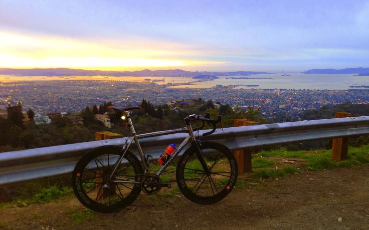

Paul McKenzie leads you on a tour of the steep Berkeley Hills which will test your power, endurance, and recovery!
Results are posted!
Grizzly Peak Road overlooking Berkeley ( Beyond Aero photo )
Cover your head, not your ears...
Sorry, folks! Our insurance requires all riders wear helmets during the climb, and we follow the USA Cycling rule against ear buds or other head phones. Rock to tunes before the climb, perhaps, but we need riders to pay attention to what's happening during the climb...
Directions
The start is at Domingo Ave and Russell St in Berkeley, near the intersection of Tunnel Road, Claremont Ave, and Ashby Ave.
Route
The route is mapped on RideWithGPS (Strava segment for full route). Time is taken by adding the times taken to climb the following climbs, which must be done in the listed order.
- Tunnel - Skyline: 3.1 mi, 764 feet, 4.7%
- Thorndale: 1.1 mi, 620 feet, 10.5%
- Quarry Rd + Volcanic Trail: 1.0 mi, 476 feet, 9%
- Fish Ranch + Grizzly Peak - Lomas Cantadas 1.8 mi, 679 feet, 7.1%
- Wildcat Canyon - Inspiration Point: 2.4 mi, 620 feet, 4.9%
- South Park: 1.4 mi, 666 feet, 9%
To return to the start from the top of South Park, turn left on Grizzly Peak. Take that to Claremont, and descend that back to the start area.
Riders will be timed based on only these climbs as long as they are ridden in this sequence and as long as to get from the top of each climb to the base of the next takes no longer than 1 hour + 3 min / km. This is a huge amount of time, even stopping for food or water or regroups, so unless you take any major wrong turns there should be no problem making these time cut-offs.
We have a brief cue sheet, perhaps suitable for mounting on the top tube: PDF format or Open Document format.
This week's course is a navigational challenge. It's strongly recommended riders join the mass-start led by Paul McKenzie at 10 am from the start area at Domingo and Russell. With sufficient participation the group will split into sub-groups based on anticipated riding speed. Even so, printing the cue sheet is recommended, in case you get separated from other riders.
Public Transit
An excellent way to this week's climb is Ashby BART, which is 1.8 miles from the start. Here's a Google map.
This is a self-timed week, so we won't have check-in and results. However, there's still volunteer options! You can volunteer to help using our volunteer form! Thanks!!!
The Low-Key Way
Low-Key is all about a group of friends riding up a hill together.
It's like any other informal group ride, except we time you to the top
and report the results on our web site. But we have no road closures,
no lead vehicle, no follow vehicle. We are traffic, sharing the roads
with other traffic, following the laws and courtesy which applies to
traffic. Think of it as a human-assisted Strava.
We're each responsible for our own actions out there, on and off the
bike, both as users of the road as as courteous visitors to the
neighborhoods we pass through. "Ceci n'est pas un race".
"Get your ass up that hill!" -- Kevin Winterfield, Fovnder
Dan Connelly